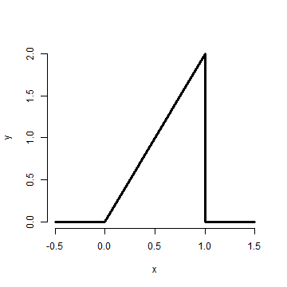

- In these slides we will cover the basics of probability at low enough level to have a basic understanding for the rest of the series
- For a more complete treatment see the class Mathematical Biostatistics Boot Camp 1
Probability
Statistical Inference
Brian Caffo, Jeff Leek, Roger Peng
Johns Hopkins Bloomberg School of Public Health
Probability
Probability
Given a random experiment (say rolling a die) a probability measure is a population quantity that summarizes the randomness.
Specifically, probability takes a possible outcome from the expertiment and assigns it a number between 0 and 1 so that the probability that something occurs is 1 (the die must be rolled) and so that the probability of the union of any two sets of outcomes that have nothing in common is the sum of their respective probabilities.
The Russian mathematician Kolmogorov formalized these rules.
Example consequences
- \(P(\emptyset) = 0\)
- \(P(E) = 1 - P(E^c)\)
- \(P(A \cup B) = P(A) + P(B) - P(A \cap B)\)
- if \(A \subset B\) then \(P(A) \leq P(B)\)
- \(P\left(A \cup B\right) = 1 - P(A^c \cap B^c)\)
- \(P(A \cap B^c) = P(A) - P(A \cap B)\)
- \(P(\cup_{i=1}^n E_i) \leq \sum_{i=1}^n P(E_i)\)
- \(P(\cup_{i=1}^n E_i) \geq \max_i P(E_i)\)
Example
The National Sleep Foundation (www.sleepfoundation.org) reports that around 3% of the American population has sleep apnea. They also report that around 10% of the North American and European population has restless leg syndrome. Does this imply that 13% of people will have at least one sleep problems of these sorts?
Example continued
Answer: No, the events are not mutually exclusive. To elaborate let:
\[ \begin{eqnarray*} A_1 & = & \{\mbox{Person has sleep apnea}\} \\ A_2 & = & \{\mbox{Person has RLS}\} \end{eqnarray*} \]
Then
\[ \begin{eqnarray*} P(A_1 \cup A_2 ) & = & P(A_1) + P(A_2) - P(A_1 \cap A_2) \\ & = & 0.13 - \mbox{Probability of having both} \end{eqnarray*} \] Likely, some fraction of the population has both.
Random variables
- A random variable is a numerical outcome of an experiment.
- The random variables that we study will come in two varieties, discrete or continuous.
- Discrete random variable are random variables that take on only a
countable number of possibilities.
- \(P(X = k)\)
- Continuous random variable can take any value on the real line or some subset of the real line.
- \(P(X \in A)\)
Examples of variables that can be thought of as random variables
- The \((0-1)\) outcome of the flip of a coin
- The outcome from the roll of a die
- The BMI of a subject four years after a baseline measurement
- The hypertension status of a subject randomly drawn from a population
PMF
A probability mass function evaluated at a value corresponds to the probability that a random variable takes that value. To be a valid pmf a function, \(p\), must satisfy
- \(p(x) \geq 0\) for all \(x\)
- \(\sum_{x} p(x) = 1\)
The sum is taken over all of the possible values for \(x\).
Example
Let \(X\) be the result of a coin flip where \(X=0\) represents tails and \(X = 1\) represents heads. \[ p(x) = (1/2)^{x} (1/2)^{1-x} ~~\mbox{ for }~~x = 0,1 \] Suppose that we do not know whether or not the coin is fair; Let \(\theta\) be the probability of a head expressed as a proportion (between 0 and 1). \[ p(x) = \theta^{x} (1 - \theta)^{1-x} ~~\mbox{ for }~~x = 0,1 \]
A probability density function (pdf), is a function associated with a continuous random variable
Areas under pdfs correspond to probabilities for that random variable
To be a valid pdf, a function \(f\) must satisfy
\(f(x) \geq 0\) for all \(x\)
The area under \(f(x)\) is one.
Example
Suppose that the proportion of help calls that get addressed in a random day by a help line is given by \[ f(x) = \left\{\begin{array}{ll} 2 x & \mbox{ for } 1 > x > 0 \\ 0 & \mbox{ otherwise} \end{array} \right. \]
Is this a mathematically valid density?
x <- c(-0.5, 0, 1, 1, 1.5)
y <- c(0, 0, 2, 0, 0)
plot(x, y, lwd = 3, frame = FALSE, type = "l")

Example continued
What is the probability that 75% or fewer of calls get addressed?

1.5 * 0.75/2
## [1] 0.5625
pbeta(0.75, 2, 1)
## [1] 0.5625
CDF and survival function
- The cumulative distribution function (CDF) of a random variable \(X\) is defined as the function \[ F(x) = P(X \leq x) \]
- This definition applies regardless of whether \(X\) is discrete or continuous.
- The survival function of a random variable \(X\) is defined as \[ S(x) = P(X > x) \]
- Notice that \(S(x) = 1 - F(x)\)
- For continuous random variables, the PDF is the derivative of the CDF
Example
What are the survival function and CDF from the density considered before?
For \(1 \geq x \geq 0\) \[ F(x) = P(X \leq x) = \frac{1}{2} Base \times Height = \frac{1}{2} (x) \times (2 x) = x^2 \]
\[ S(x) = 1 - x^2 \]
pbeta(c(0.4, 0.5, 0.6), 2, 1)
## [1] 0.16 0.25 0.36
Quantiles
- The \(\alpha^{th}\) quantile of a distribution with distribution function \(F\) is the point \(x_\alpha\) so that \[ F(x_\alpha) = \alpha \]
- A percentile is simply a quantile with \(\alpha\) expressed as a percent
- The median is the \(50^{th}\) percentile
Example
- We want to solve \(0.5 = F(x) = x^2\)
- Resulting in the solution
sqrt(0.5)
## [1] 0.7071
- Therefore, about 0.7071 of calls being answered on a random day is the median.
- R can approximate quantiles for you for common distributions
qbeta(0.5, 2, 1)
## [1] 0.7071
Summary
- You might be wondering at this point "I've heard of a median before, it didn't require integration. Where's the data?"
- We're referring to are population quantities. Therefore, the median being discussed is the population median.
- A probability model connects the data to the population using assumptions.
- Therefore the median we're discussing is the estimand, the sample median will be the estimator